N3510主机折腾日志：第一期
前言：随着近几年计算机的发展，人工智能开始陆续出现在各家各户。从知名的ChatGPT，到Deepseek，在到现在的Openclaw，AI不在从简单的chat到现在有点智能的ai agent(自主感知环境、规划任务并执行的智能系统)，本次日志就围绕AI这个主题，玩玩蛮火的Astrbot开源项目(AstrBot 是一个跨平台 AI 助手，让 AI 直接工作在你的聊天软件中，实现自动化任务与智能协作，同时提供灵活的 Agent 编排能力。)
时间回到几周前，我向往常一样看着视频，直到刷到这个视频：《再见了龙虾！AstrBot安装使用指南（终极版）》一开始感觉没有什么，但看了看视频，感觉部署起来有点简单，而且正好没有事情干，于是先在自己的主力机部署了，正好AstrBot有windows桌面部署，于是二话不说就完成了部署。
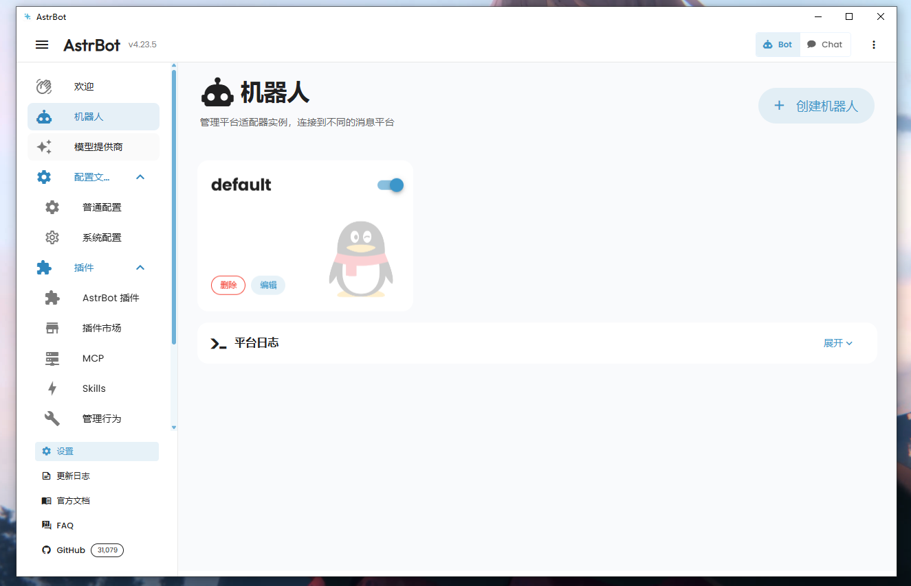

但我发现了这个QQ官方的机器人是只能私聊的，不能进群的，因此我感觉没有什么意思，于是上网搜索发现了napcat这个开源项目可以连接AstrBot然后连接QQ，就可以让QQ小号自动发言了，于是我研究了一下成功部署完成。
但问题又来了，这是我在主机上部署的，我不能一直开这个电脑吧，于是我便想了一下，可以用功耗很低的小主机来部署上去，这样便可以24小时在线了。
于是在我四处寻找时，本期的主角终于呈现了：N3150
N3510这个其实是CPU的名称，全称：英特尔® 赛扬® 处理器 N3150
性能不是很强：
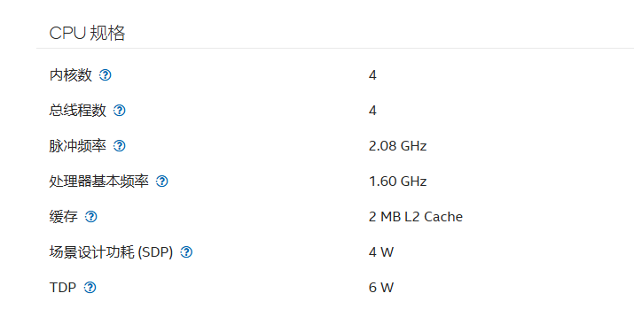
看这规格就知道其实可以说是垃圾，现在的I3都可以吊打它，但功耗摆在那里，再加上我在咸鱼上见到的这台主机价格：
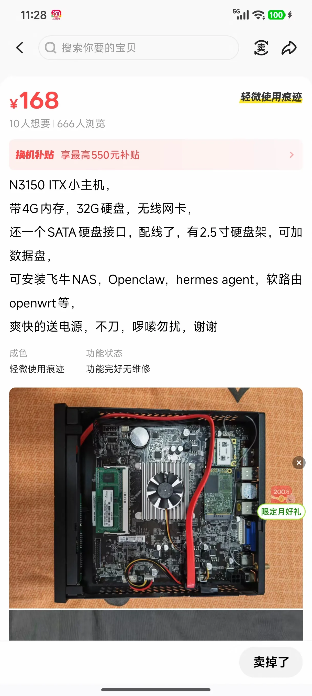
168元，4gb+32gb而且还有电源，最后直接爽快拿下。
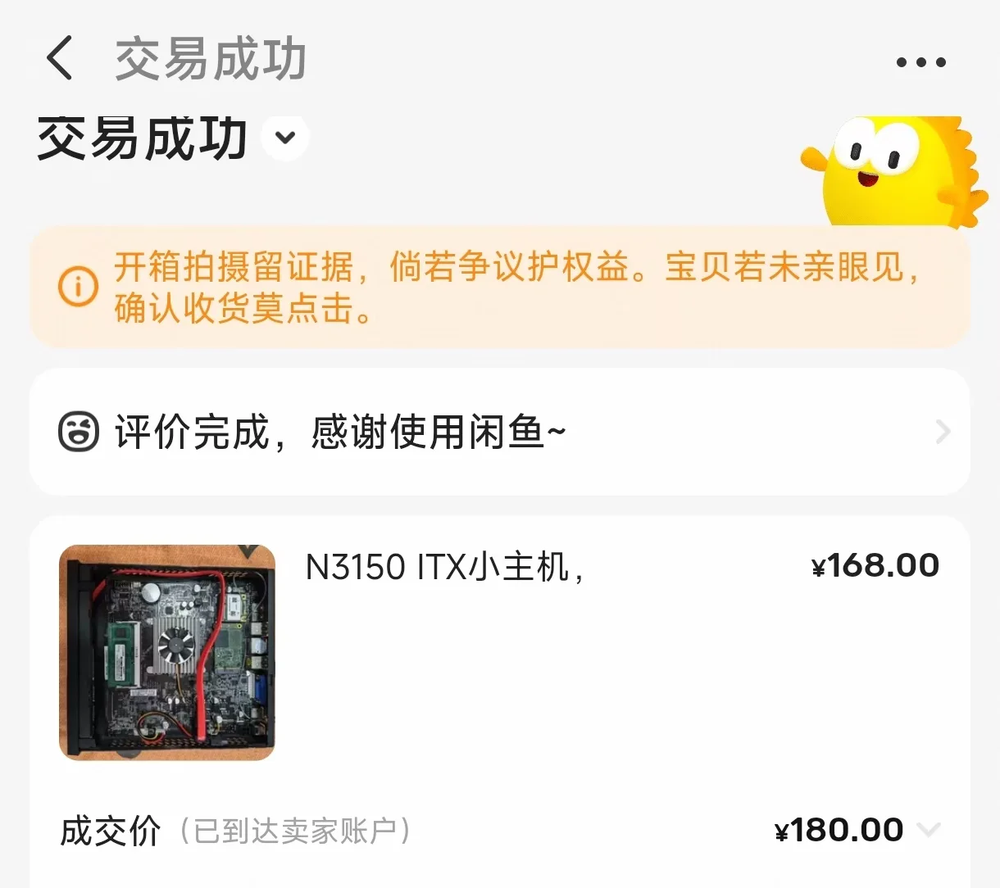
到货开箱
看看机子本身吧
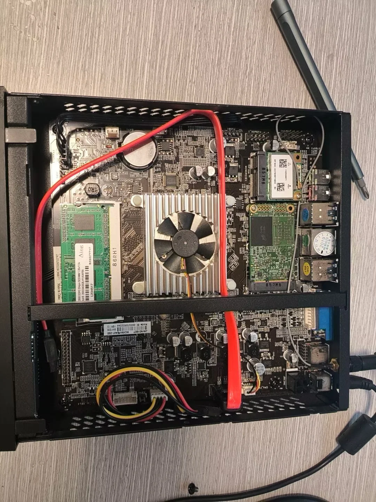
非常馋人！
然后就开始了装系统之旅（非常坐牢！）首先装了Fnos
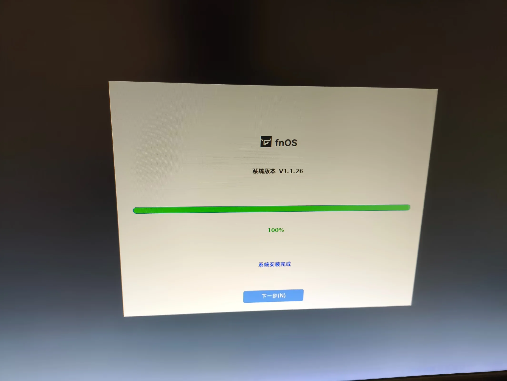
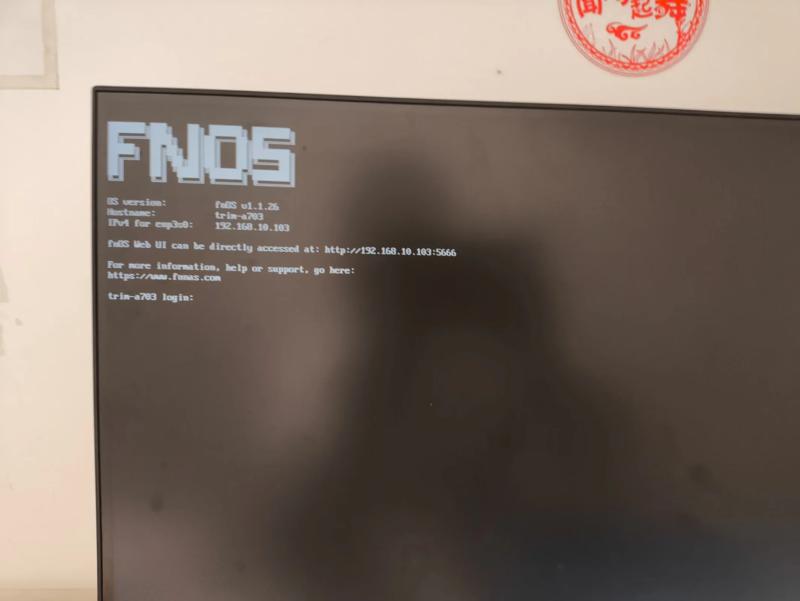
但很可惜FNOS docker部署要额外硬盘，我这里没有多余的SATA固态硬盘，因此放弃了，准备玩玩别的系统，然后看了很多系统，于是选择了Linux的ubuntu桌面端，然后我的噩梦到来了，我的ubuntu死活装不上，老是出现安装介质出现错误，折腾一一个晚上，最后以失败告终，于是第二天，我决定用windows来带跑，验证主机是否完好，至于选择哪个系统，我毅然决然的选择了win8.1系统，可能有很多人没听所过win8.1和使用过win8.1，Windows 8.1是微软公司于2013年发布的操作系统，适用于电脑和平板设备，并在Windows 8基础上进行了功能改进和界面优化，这是他的简介，对我来说win8.1系统的特点就是它的神优化，为什么这么说呢？因为即使你用的是机械硬盘，它依然跑起来甚至比win7快，而且内存优化也是数一数二的好，而且在我一台2gb内存的测试机上跑起来异常的流畅，可见win8.1的实力不一般吧，但可惜它消失在了历史的长河，可以说win8.1它是一个超前的系统，如果当时windows手机流行起来，win8.1应该也不会被遗忘吧，就如同它的前辈windows vista一样太过超前，导致现在无人问津，真是可惜的一个优秀的操作系统了，它的优化其实根本不逊色Linux。下面是我用那台测试机运行win8.1的视频：
但在部署的时候我遇到了很严重的错误，我用U盘启动PE进入安装win8.1系统，但安装器报错0x3: 系统找不到指定的路径，于是我用镜像安装的方法来安装系统但又报了0x80070003错误，在我尝试无果后，我想到一个骚气的系统安装方法：那就是在另一台主机上安装系统然后在将硬盘重新安装会小主机上然后引导启动。问题如下（图片当时没保存，错误现状类似安装到5就报错）
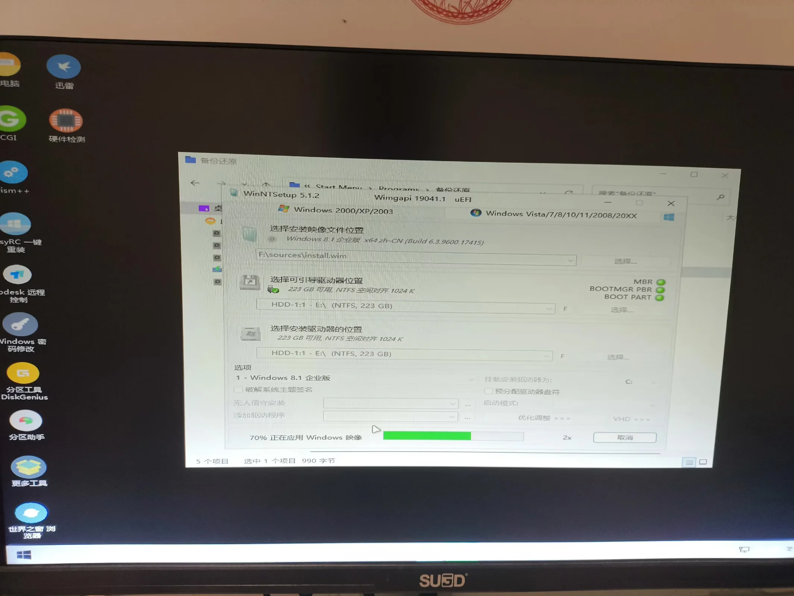
结果是我成功了，主机成功进入了win8.1系统，于是按照这个思路，我又重新安装了ubuntu系统，但ubuntu这个系统又些问题，一不知道是不是vga模拟信号的问题，导致我的显示屏显示不是完整的，还有就是ubuntu桌面版有点卡，于是我又放弃了ubuntu这个系统。
于是我一边问deepseek一边浏览器搜索寻找好用的Linux系统，最终我找到了这个系统linux Debian这个系统，它非常的经典且稳定，是一般服务器系统的首选，而且现在还在跟新，于是我二话不说，制作启动盘，安装系统：
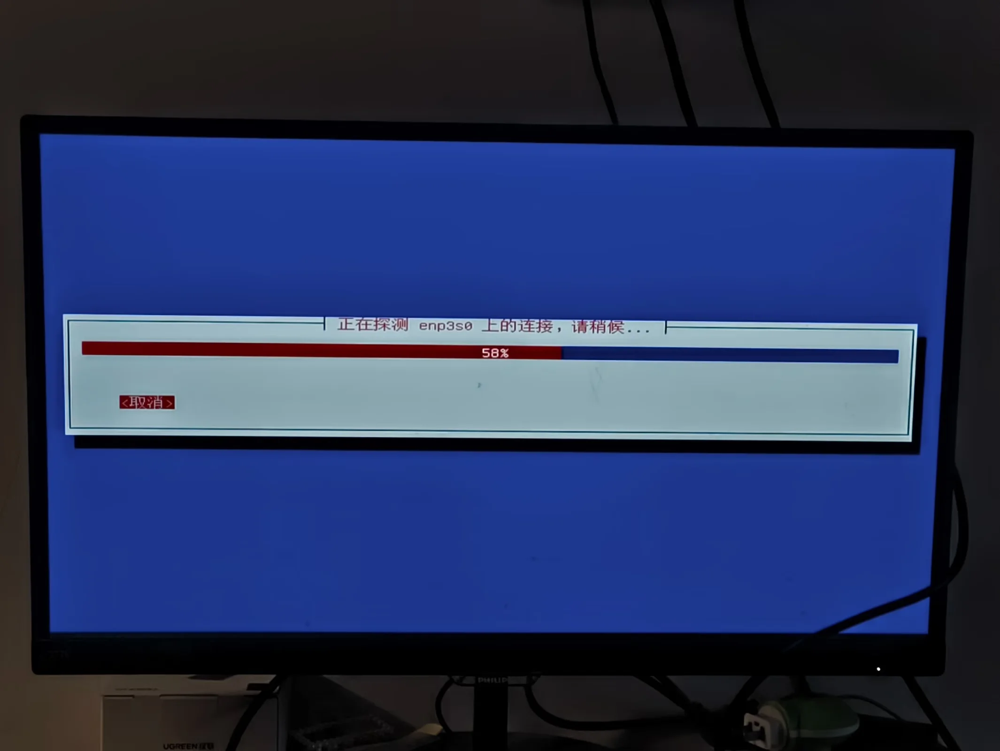
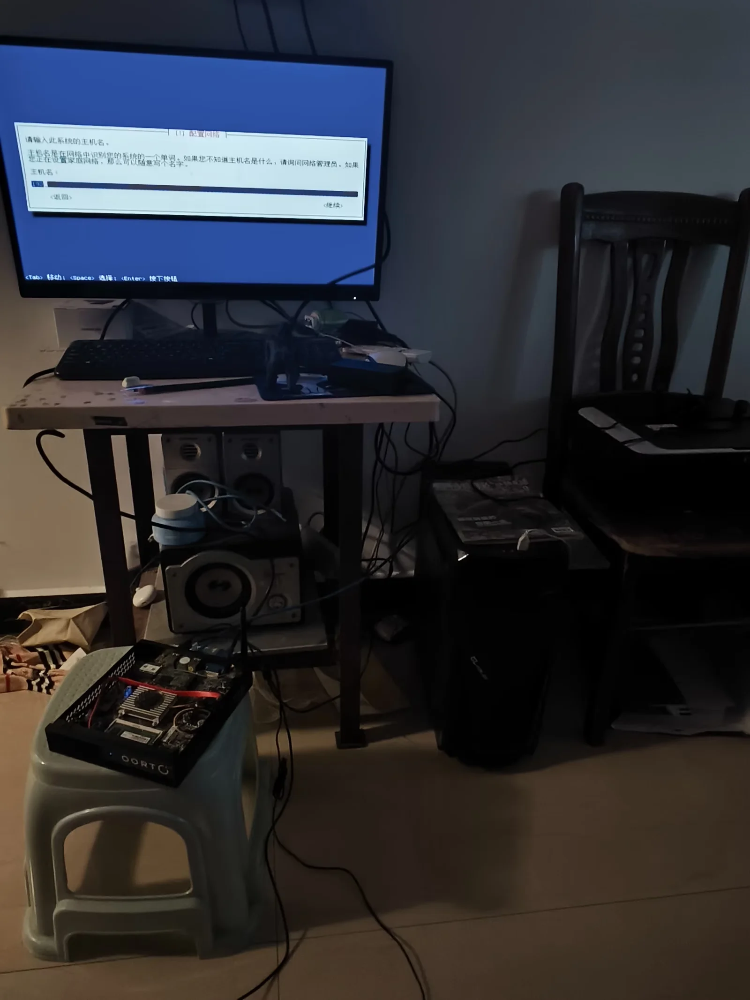
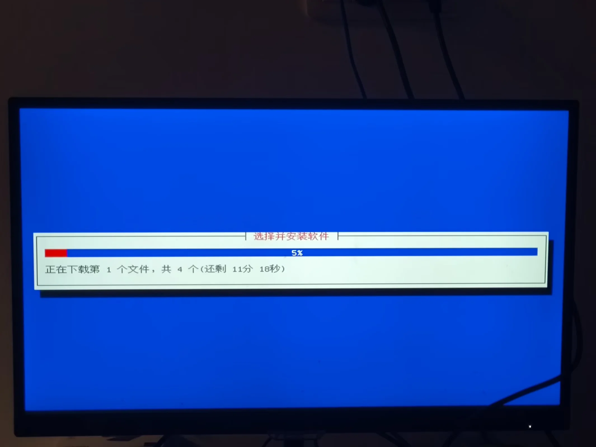
安装完毕，我启动主机并且进行配置
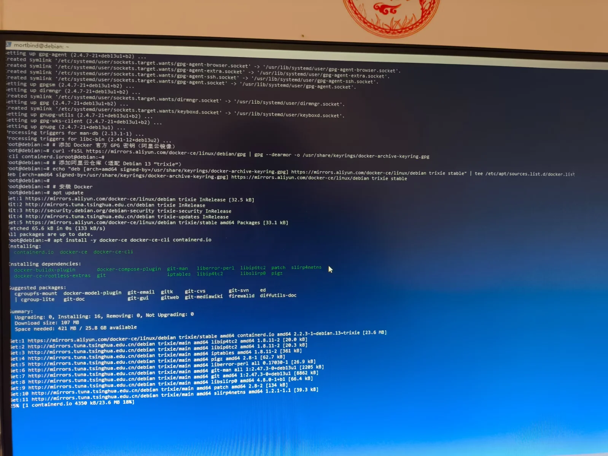
之后就是docker系统的部署和AstrBot和NapCat的部署，最终部署成功
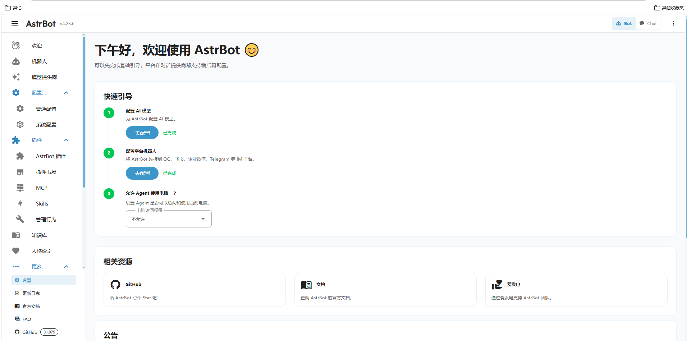
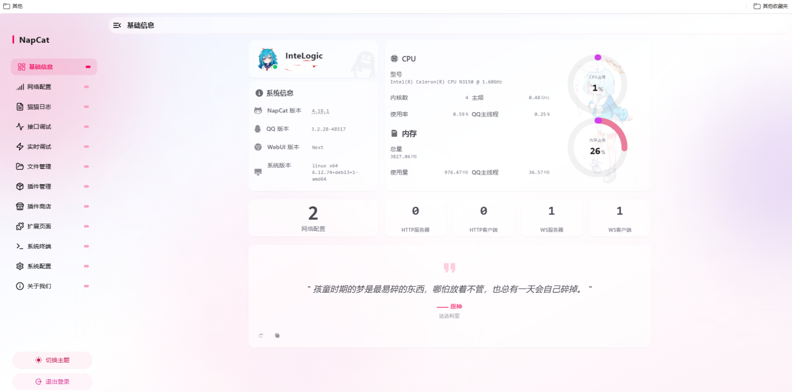
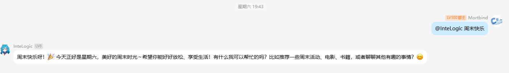
至此，我的Astrbot之旅就基本结束，后续还有很多的研究的插件以及一些代码（我看不懂，估计你们也看不懂吧！doge）就不在此赘述了。总结，本次折腾是有点费力的总时长11+小时，当时搞完人麻了。但也还好，此次折腾也学了很多，比如AI的基本尝试，了解了什么是API等一些专有名词，而且初入了Linux，linux真的可以理解为计算机界的开放世界了，真的特别有意思！最后还是感谢deepseek，本次很多代码和报错都是通过它提供和纠正的。那么本次的日志就到此结束了。敬请期待更加有意思的折腾日常！
幕后：
原来之所以报错0x80070003错误和安装器报错0x3错误，是我U盘的问题，在一次偶然机会我想到了这种可能，因为有些电脑有可能不支持太快的U盘，真的是服了，排查了那么多问题，最后却是U盘的问题，下次长教训了hhhh。
引用文献：
- 英特尔® 赛扬® 处理器 N3150 介绍 ---------- https://www.intel.cn/content/www/cn/zh/products/sku/87258/intel-celeron-processor-n3150-2m-cache-up-to-2-08-ghz/specifications.html
- win8.1系统介绍 ---------- https://baike.baidu.com/item/Windows%208.1/768457
- Linux ubuntu系统 ---------- https://cn.ubuntu.com/download/desktop
- Linux Debian系统 ---------- https://www.debian.org/index.zh-cn.html
- fnOS系统 ---------- https://www.fnnas.com/
- AstrBot ---------- https://astrbot.app/
- NapCat ---------- https://napneko.github.io/guide/napcat
- QQ开放平台 ---------- https://q.qq.com/
- Deepseek ---------- https://www.deepseek.com/
- 微PE ---------- https://www.wepe.com.cn/
- 再见了龙虾！AstrBot安装使用指南（终极版） ---------- https://www.bilibili.com/video/BV13rXKBPEFb/?spm_id_from=333.337.search-card.all.click&vd_source=5803d46acf92ba655ecaec781f60957a
安装的资源：
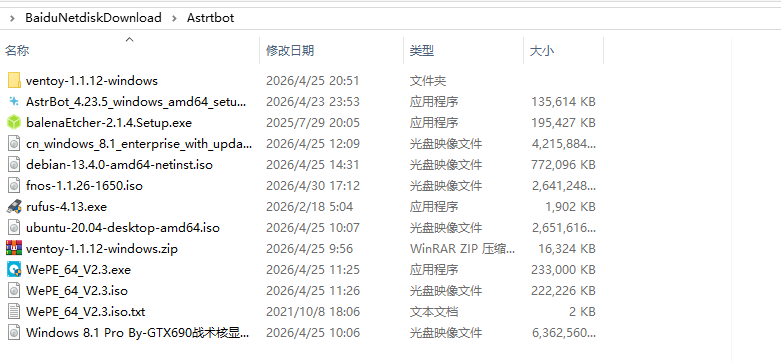
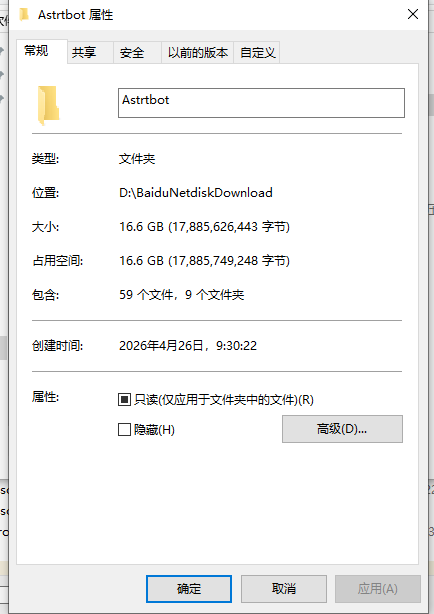
百金之躯，十一时之役，AI卒栖方寸而语人（由Deekseep老师生成）